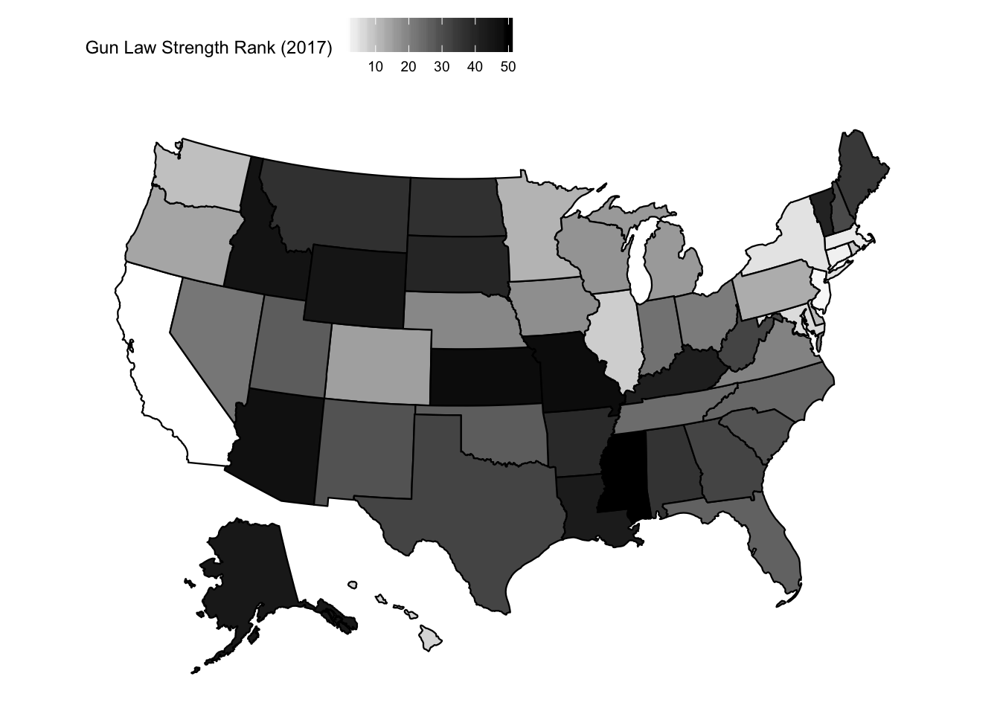
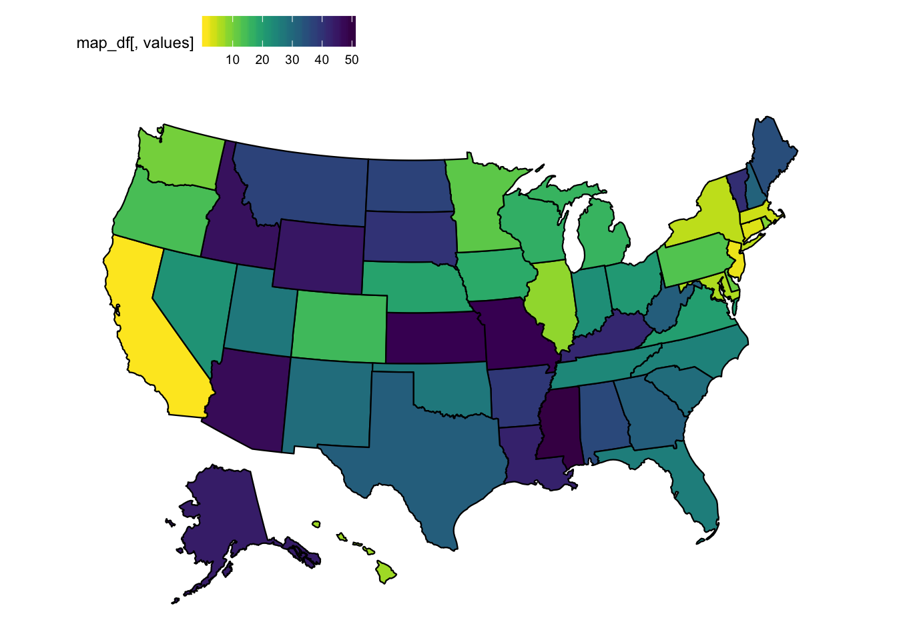
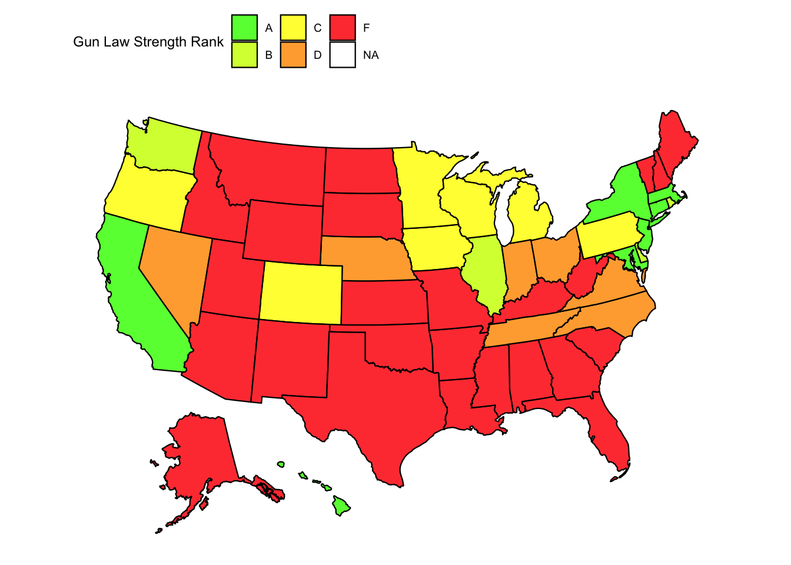
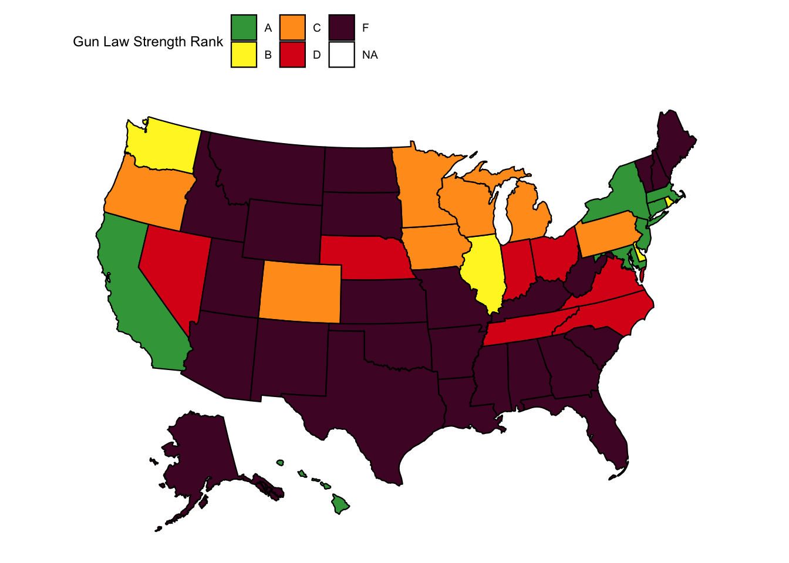
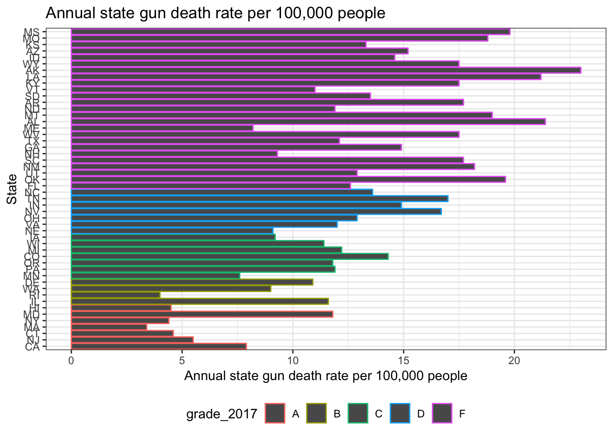

# website URL
url = "https://lawcenter.giffords.org/scorecard/#rankings"
gun_climate_url = read_html(url)
# extract table and clean data
gun_climate_data =
gun_climate_url %>%
html_nodes(css = "table") %>%
.[[1]] %>%
html_table(header = TRUE) %>%
as.tibble() %>%
janitor::clean_names() %>%
rename(
law_strength = gun_law_strength_ranked,
grade_2017 = x2017grade,
death_rate_rank = gun_death_rate_ranked,
death_rate = gun_death_rate_per_100k) %>%
mutate(
grade_2017 = factor(grade_2017,
levels = c("A", "A-", "B+", "B", "C+", "C", "C-", "D", "D-", "F")),
grade_2017 = fct_collapse(grade_2017,
A = c("A", "A-"),
B = c("B+", "B"),
C = c("C+", "C", "C-"),
D = c("D", "D-")),
state_abb = state.abb)
gun_climate_data## # A tibble: 50 x 6
## law_strength state grade_2017 death_rate_rank death_rate state_abb
## <int> <chr> <fct> <int> <dbl> <chr>
## 1 36 Alabama F 2 21.4 AL
## 2 44 Alaska F 1 23 AK
## 3 47 Arizona F 16 15.2 AZ
## 4 39 Arkansas F 9 17.7 AR
## 5 1 California A 43 7.9 CA
## 6 15 Colorado C 20 14.3 CO
## 7 3 Connecticut A 46 4.6 CT
## 8 11 Delaware B 37 10.9 DE
## 9 26 Florida F 26 12.6 FL
## 10 32 Georgia F 17 14.9 GA
## # ... with 40 more rows# gun law strength rank - color 1
gun_climate_data %>%
select(state_abb, law_strength) %>%
rename(state = state_abb) %>%
plot_usmap(data = ., values = "law_strength") +
scale_fill_continuous(low = "white", high = "black", name = "Gun Law Strength Rank (2017)") +
theme(legend.position = "top")
# gun law strength rank - color 2
gun_climate_data %>%
select(state_abb, law_strength) %>%
rename(state = state_abb) %>%
plot_usmap(data = ., values = "law_strength") +
scale_fill_viridis(direction = -1) +
theme(legend.position = "top")
# gun law grade - color 1
gun_climate_data %>%
select(state_abb, grade_2017) %>%
rename(state = state_abb) %>%
plot_usmap(data = ., values = "grade_2017") +
scale_fill_manual(values = c("#65ff3f", "#d5ff3f", "#fffb3f", "#ffab3f", "#ff423f"),
name = "Gun Law Strength Rank") +
theme(legend.position = "top")
# gun law grade - color 2
gun_climate_data %>%
select(state_abb, grade_2017) %>%
rename(state = state_abb) %>%
plot_usmap(data = ., values = "grade_2017") +
scale_fill_manual(values = c("#3ca348", "#fff428", "#ff9c1e", "#db1d1a", "#4f0b2f"),
name = "Gun Law Strength Rank") +
theme(legend.position = "top")
# annual state gun death rates per 100,000 people
# in order of gun strength
# grouped by grade
plot =
gun_climate_data %>%
group_by(grade_2017) %>%
ggplot(aes(x = reorder(state_abb, law_strength), y = death_rate, color = grade_2017)) +
geom_bar(stat = "identity", position = position_dodge(width=0.5)) +
coord_flip() +
labs(
y = "Annual state gun death rate per 100,000 people",
x = "State",
title = "Annual state gun death rate per 100,000 people")
plot
ggplotly(plot)